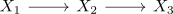
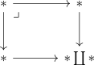

left split fiber sequence in anima without pi_0 condition does not split
Proposition
Let $X_1,X_2,X_3$ be anima such that

is a left split fiber sequence.
Then (without assuming more about $\pi_0(-)$) this sequence does not split as
\begin{align*}
X_2 \simeq X_1 \times X_3
\end{align*}
Proof
consider the pullback

which follows as pullback in category set (cf.Set as left bousfield localization of Anima)
Then obviously
\begin{align*}
\mobx * \not\simeq (* \coprod *) \times *
\end{align*}
Alternatively consider the pointed map
\begin{align*}
\{1,2,*\} \rightarrow \{1,*\} \\
\end{align*}
where $1 \mapsto 1, 2 \mapsto *, * \mapsto *$. Then the fiber is given by $\{2,*\}$, so in particular
\begin{align*}
\{2,*\} \times \{1,*\} \not\cong \{1,2,*\}
\end{align*}